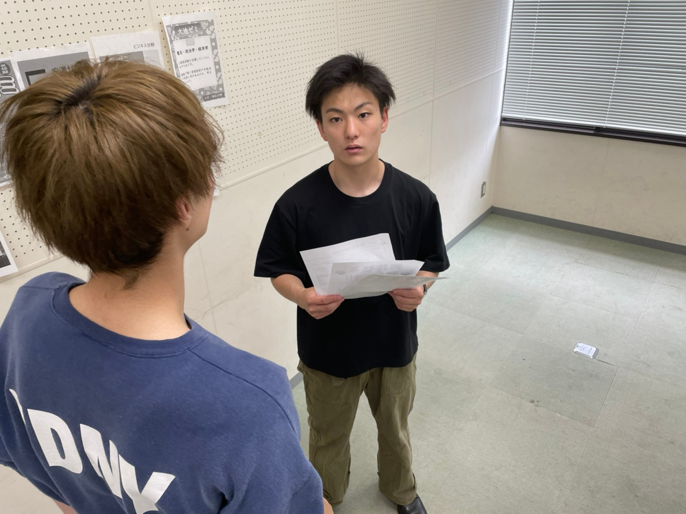
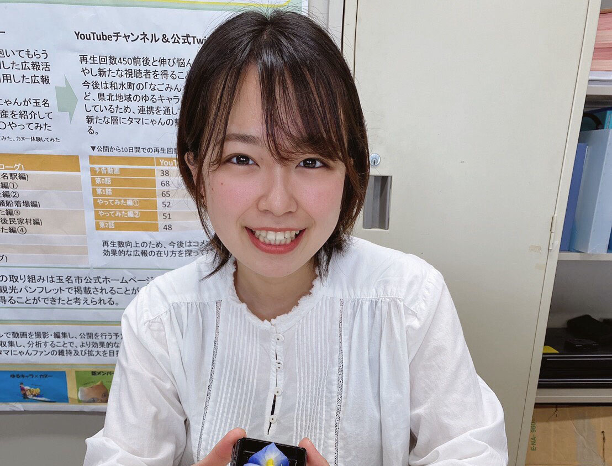
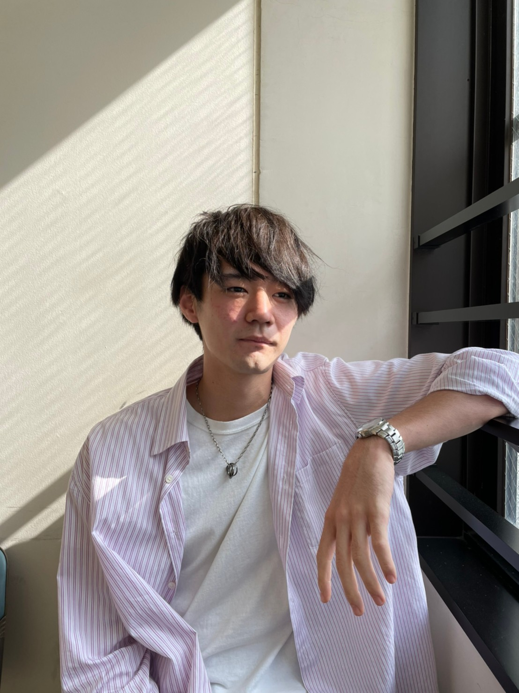
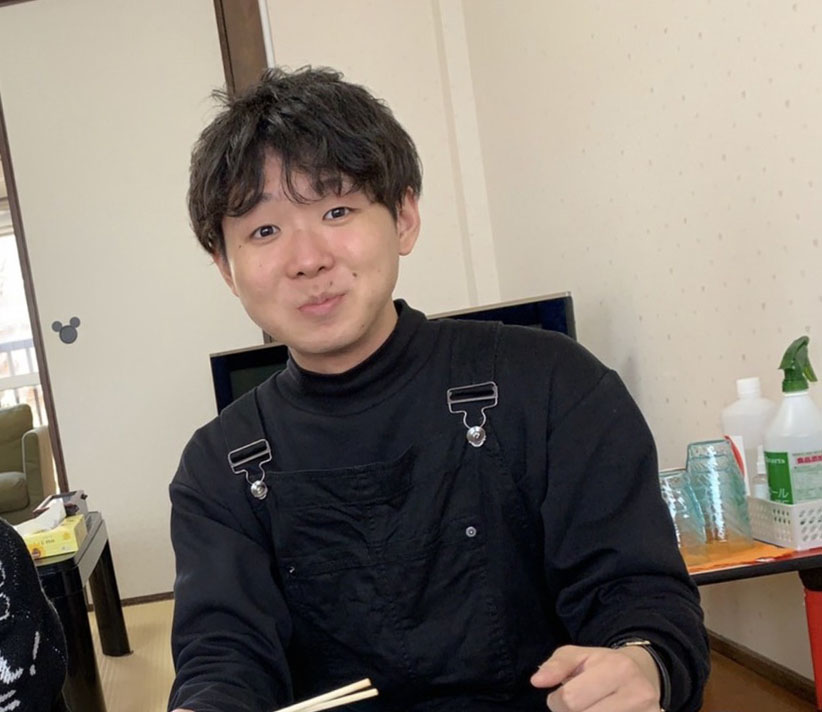
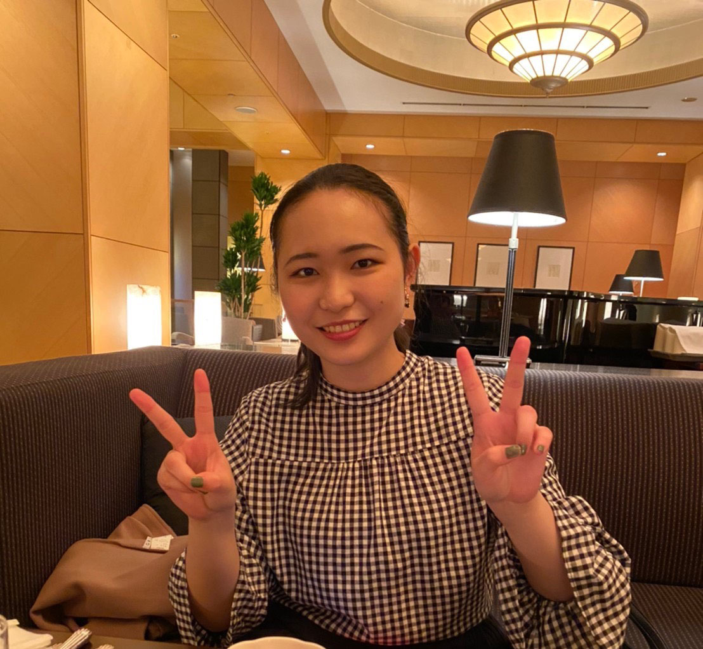

神田 幸輝
津曲ゼミはなんといっても作成の多いゼミです。具体的にいうと、15秒や30秒のCM作成や、イラストレーターを使った絵の作成などです。一つ一つ苦労が重なる作業の為、できの良い作品ができたときの達成感は何者にも変え難いです。苦楽を共にするため、あっという間にメンバーと仲良くなれる、そんな明朗なゼミです。

中西 陶子
チームワーク必須のゼミです。班の一人が頑張れば達成できるような簡単な内容はありません。しかし、難しい作業でも班員と協力し、より良いものに作り上げていく過程はとても楽しいです。また、活動を通して班員の得意なことを発見できるのも班活動の魅力です。今は活かせないと思っている能力や趣味でも津曲ゼミでは案外輝けたりします。

嶋崎 翔太
津曲ゼミでは映像制作などをグループで行っています。楽しく元気に、笑いあり、涙あり、モハメドアリ、活動できます。忙しい時もありますが、とてもやりがいのあるゼミです。できなかった事ができるようになる成長を感じた時はとても嬉しいです。パソコンを使った作業や動画編集、映像制作に興味がある人におすすめのゼミです。

横山 貴大
ガリラボは活動的な人が集まる和気藹々とした雰囲気のゼミです。映像などの制作を主に学べます。何か始めたいなーとか今の学校生活に物足りなさを感じている人に来て欲しいです。イケメン神田君もいます！

川口 量子（19ゼミ長）
津曲ゼミには毎年、個性が豊かなメンバーが集まります。縦の繋がりがとても強固でガリフェスや興津会などのイベントを通して、たくさんの先輩と知り合えるのも魅力の一つです。動画の編集やポスター作成、広報誌政策、地域と連携した研究など、幅披露活動からは学ぶことが多く、ここでなら刺激的な日々を送れること間違いなし！

市原 しおん
津曲ゼミでは情報系のゼミではありますが、それだけではありません。自分のチャレンジしたいことに挑戦することができたり、活動していく中で自分のしたいことや好きなことを見つけたりすることができます。また、グループ活動を主として行っているため、お互いを高め合える仲間を見つけることもできます。とてもアットホームで素敵なゼミです。